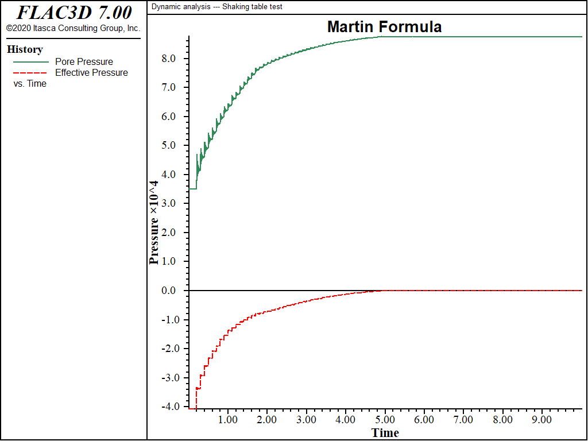
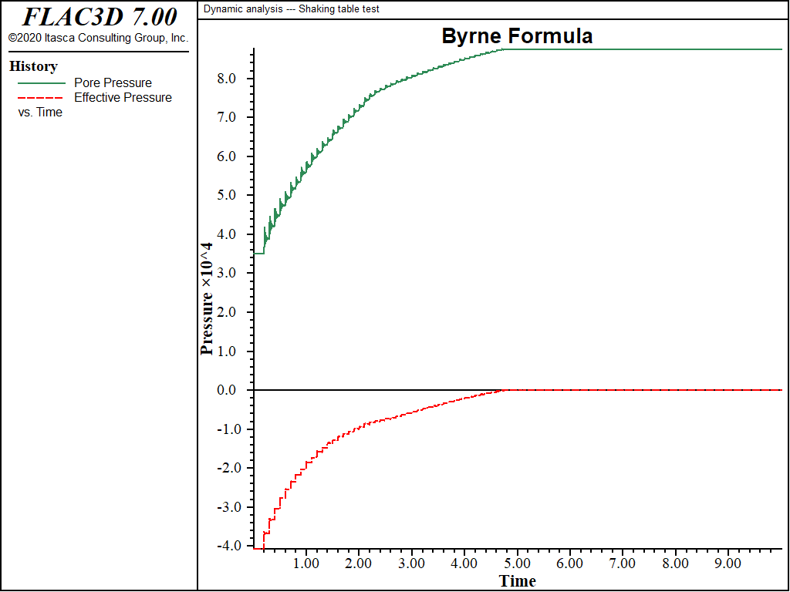

采用 Finn 模型的振动台试验：土层液化的模拟
注意
要在 FLAC3D 中查看此项目，请使用菜单命令 。选择“Dynamic/ShakingTableTest”并选择“ShakingTableTest.f3prj”以加载。 所用主数据文件见本示例末尾（main data files）。其余数据文件可在项目中找到。
Finn 模型中控制孔隙压力累积的材料常数与 排水试验中的体积响应有关。但是，如果有不排水试验的结果， 则可以直接模拟该试验，并通过将数值结果与试验观测结果比较 来推求材料常数。在找到匹配之前需要进行一些调整。
在以下示例中，用 FLAC3D 模拟一个“振动台”。
在这个简单示例中，用 FLAC3D 模拟一个“振动台”——它由一箱 砂组成，其底部被施加周期运动。侧面的运动跟随 底部的运动，只是幅值在顶部减小到零（即运动为 简单剪切）。竖向荷载仅由重力提供。在土中施加平衡应力和孔隙 压力，并在土中某网格单元内监测孔隙压力和有效应力（平均总 应力减去孔隙压力）。由于这里对水平方向的变化没有特别兴趣，故只建模一个网格单元宽度的土柱。
对 Martin 等（1975）公式（Martin et al. (1975) formula） 和 Byrne（1991）公式（Byrne (1991) formula） 都进行了该试验。Byrne 参数对应于 \({(N_1)_{60}}\) = 6，选取该值是为了使结果与基于给定 Martin 参数的结果相匹配。
基于Martin 公式（the Martin formula）的结果示于 图 1（Figure 1），基于 Byrne 公式（the Byrne formula）的结果示于 图 2（Figure 2）。两图表明使用任一公式行为相似。两者都显示了 (25, 25, 2.5) 处的孔隙压力如何随时间 累积。同一网格单元中有效应力的历史也一并给出。可以看出，在约 15 个振动循环（5 Hz 下 2 秒）后有效 应力达到零。此时可以认为发生了液化。该试验在剪切方向上是应变控制的。对于 应力控制试验，破坏会更早发生，因为应变循环的幅值将开始增大，从而产生更多孔隙压力。


图 1：振动台的孔隙压力（上）和有效应力（下），采用Martin（人名）（Martin）。


图 2：振动台的孔隙压力（上）和有效应力（下），采用Byrne（人名）（Byrne）。
参考文献
Byrne, P. “A Cyclic Shear-Volume Coupling and Pore-Pressure Model for Sand,” in Proceedings: Second International Conference on Recent Advances in Geotechnical Earthquake Engineering and Soil Dynamics (St. Louis, Missouri, March, 1991), Paper No. 1.24, 47-55 (1991).
Martin, G. R., W. D. L. Finn and H. B. Seed. “Fundamentals of Liquefaction Under Cyclic Loading,” J. Geotech., Div. ASCE, 101(GT5), 423-438 (1975).
数据文件
ShakingTableTest.dat
;------------------------------------------------------------ ; 动力问题所用脚本文件 ; 振动台试验 ;------------------------------------------------------------ model new model large-strain off fish automatic-create off model title "Dynamic analysis --- Shaking table test" model config dynamic fluid ; ; 创建网格单元 ; Martin 网格 zone create brick size 1,5,1 point 1 (50,0,0) point 2 (0,5,0) ... point 3 (0,0,5) group 'Martin' ; Byrne 网格 zone create brick size 1,5,1 point 0 (0,0,10) point 1 (50,0,10) ... point 2 (0,5,10) point 3 (0,0,15) group 'Byrne' ; ; 指定材料模型和参数 zone cmodel finn zone fluid cmodel assign isotropic zone property density 2000 shear 2e8 bulk 3e8 friction 35 number-latency=50 ; Martin 公式的参数 zone property flag-switch=0 constant-1=0.80 constant-2=0.795 ... constant-3=0.45 constant-4=0.73 range group 'Martin' ; Byrne 公式的参数 fish define c1(n1_60) c1 = 8.7*math.exp(-1.25*math.ln(n1_60)) end zone property flag-switch=1 constant-1=[0.5*c1(6)] constant-2=[0.4/c1(6)] ... constant-3=0.0 range group 'Byrne' zone fluid property porosity 0.5 zone gridpoint initialize fluid-modulus 2e9 zone initialize fluid-density 1000 ; ; 边界条件 fish define sineWave(gp,dum) local v = 0.005 * math.sin(2 * math.pi * 5 * zone.dynamic.time.total) sineWave = v * (5 - gp.pos.y(gp)) / 5.0 end zone face apply velocity-x 1 fish-local sineWave ; 施加于所有面 zone face apply velocity-normal 0 range position-y 0 zone gridpoint fix velocity-z ; ; 初始条件 model gravity (0,-10,0) zone gridpoint initialize pore-pressure 5e4 gradient (0,-1e4,0) zone initialize-stresses ratio 0.8 total ; ; 动力设置 zone dynamic damping rayleigh 0.05 20.0 model dynamic timestep fix 1e-4 ; ; 历史 history interval 20 model history name='time' dynamic time-total zone history name='ppm' pore-pressure position (25,1.5, 2.5) zone history name='ppb' pore-pressure position (25,1.5,12.5) zone history name='esm' stress-effective quantity mean position (25,1.5, 2.5) zone history name='esb' stress-effective quantity mean position (25,1.5,12.5) zone history velocity-x position (0,5,0) model save 'initial' ; ; 求解至时间 10 并保存 model fluid active off model solve time-total 10.0 model save 'ShakingTableTest'
| 这些内容对您有帮助吗？… 版权与免责声明 | FLAC3D © 2019, Itasca | 原文更新于 2020 年 10 月 8 日 |